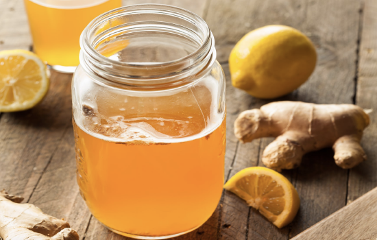
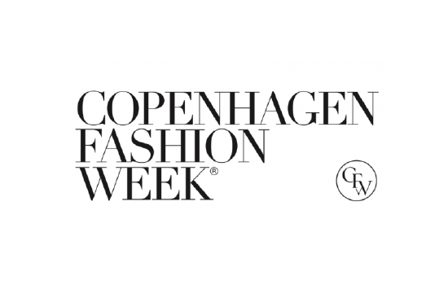

NOT JUST ANOTHER VITAMINWATER
HVEM ER VI?
SIMPLE er en ny og banebrydende vitamindrik, som vil hjælpe unge samt ældre, at få de ekstra vitaminer, som den almindelige dansker ikke indtager og/eller måske ikke kender til. I de 5 forskellige variationer som indtil videre bliver produceret, er der hamp, gurkemeje, kul, matcha og kombucha. Alle 5 drikke har samme base som består at andre vitaminer samt neutralt vand, kuldioxid og er alle uden tilsat sukker.
SIMPLE bliver produceret i pap-dåser som er på størrelse med normale dåser, men lettere da aluminium vejer mere end pap. Det pap som bliver brugt at producere dåserne med er genbrugt og let nedbrydeligt. Dette er med til at bekæmpe overproduktionen af plastik og aluminium, samt er med til at skåne miljøet da produktionen ikke udleder lige så meget co2, og da man desværre finder meget skrald i naturen, vil SIMPLEs dåser blive nedbrudt hvis ikke de bliver samlet op.
VORES PRODUKTER
I alle vores variationer findes der stoffer og vitaminer som bl.a. biotin, b-, c- og d-vitamin.
KOMBUCHA
Kombucha indeholder, som andre fermenterede produkter, præbiotika. Det er ufordøjelige kulhydrater, som kan være med til at fremme de gode bakterier i tarmen og dermed skabe en god tarmflora. Dette kan dog variere fra person til person. Desuden har kombucha et lavt sukkerindhold og et højt indehold af gode aminosyre. Men der findes intet videnskabeligt belæg for, at det kan have helbredende effekt at drikke kombucha.
GURKEMEJE
Det mest interessante ved gurkemeje er rodens indhold af stoffet curcumin. Det er nemlig præcis dette stof, som har flest sundhedsfremmende evner. Det er også dette stof, som har rigtig gode anti-inflammatoriske evner. Inflammation opstår, når fremmede stoffer kommer ind i kroppen. Inflammation er egentlig bare betændelse i daglig tale. Og så kan det bygge et svækket immunsystem op igen.
MATCHA
Matcha giver kroppen en god og naturlig energi, som kan gavne dig gennem hele dagen. Ligesom mange andre varianter af grøn te indeholder Matcha koffein. Den naturlige ”boostende” effekt af koffeinen bliver understøttet af kombinationen af alle de andre næringsstoffer. Derudover indeholder teen også kalium, A- og C vitamin, jern samt calcium, der alle bidrager til kroppens normale forsvarssystem.
KUL
Aktivt kul er en naturlig behandling, som bruges til at fange giftstoffer og kemikalier i kroppen, hvormed de kan skylles ud, så kroppen ikke optager dem igen. Aktivt kul hjælper med at fremme en sund fordøjelseskanal, for det fjerner de giftstoffer, der medfører allergiske reaktioner, oxidativ skade og et dårligt immunforsvar. Når du fjerner giftstofferne fra dit system, kan du således reducere ledsmerter, få mere energi og fungerer bedre mentalt.
PRODUCERET AF LET NEDBRYDELIGT GENBRUGS PAP
FORDELENE VED KOMBUCHA
Kombucha er gæret te, som er lavet af te, sukker og en kombucha svamp, også kaldet SCOBY. Gæret te lyder måske ikke så lækkert, men det er det – og så har det oven i købet ry for at have sunde fordele - især for tarmen. Den gærede te, der kaldes kombucha, har rødder 2000 år tilbage til Kina, hvor drikken var kendt som nærmest livseliksir. Læs mere om denne fantastiske te herunder.
EN MÅNED MED SIMPLE
Vi giver vores fantastiske kunder muligheden for, at vinde et halvt års forbrug af vitamindrikke fra SIMPLE, igennem vores instagram. Læs mere herunder for at høre omkring konkurrencen.
Vi vil hver uge poste en ny challenge, og løbende holde jer opdateret med konkurrencen, samt give jer en masse positiv enrgi hver dag ved at sende jer tips og tricks til en sundere og mere aktiv energifyldt hverdag.
CPH FASHION WEEK
Vi var i år med til at booste gæsterne til CPH fashion week med god energi, og en masse vigtige vitaminer og næringsstoffer. Vi stod nemlig klar under hele ugen, med alle vores friske vitaminvand, og gav et venligt smil og god energi med på vejen. Se billeder derfra herunder, og bliv selv inspireret til at sprede god energi.
HEMP
MATCHA
KOMBUCHA
KUL
GURKEMEJE
KONTAKT OS
Tlf.: 12 34 56 78
E-mail: contact@simple.com
... eller besøg os på Simplegade nr. 2